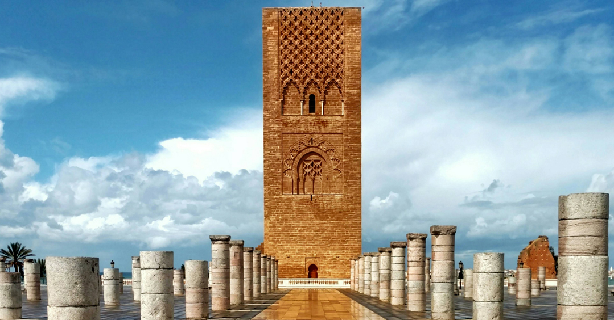

- Kasbah des Oudaias
- Mausoleum of Mohammad V
- Tour Hassan
Places



Rabat, Modern Capital and Historic City: a Shared Heritage It also encompasses older parts of the city dating back to the 12thcentury. The new town is one of the largest and most ambitious modern urban projects built in Africa in the 20th century and probably the most complete.
Check out must-see sights and activities: Kasbah des Oudaias, Mausoleum of Mohammad V, Tour Hassan , Historic Sites. For personalized recommendations, try our AI trip-planning product.
| NOM | SURFACE | INFO |
|---|---|---|
| Kasbah des Oudaias | 777600 | Inscrite au patrimoine mondial de l'UNESCO |
| Tour Hassan | 555600 | Une tour emblématique de Rabat |


elhazamzakaria@gmail.com +212 697084289